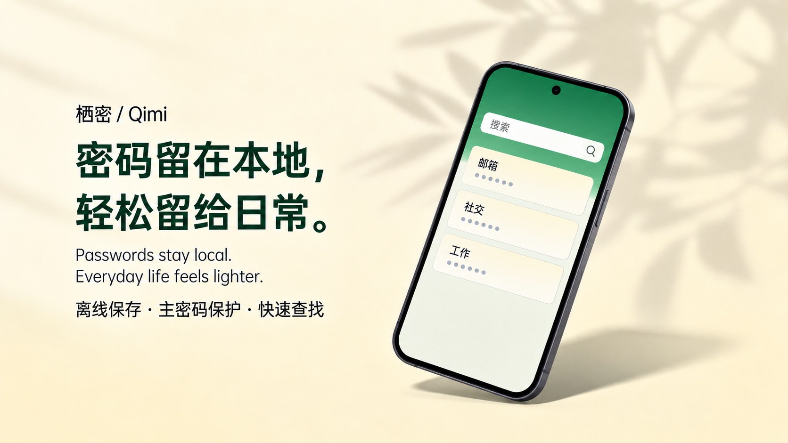
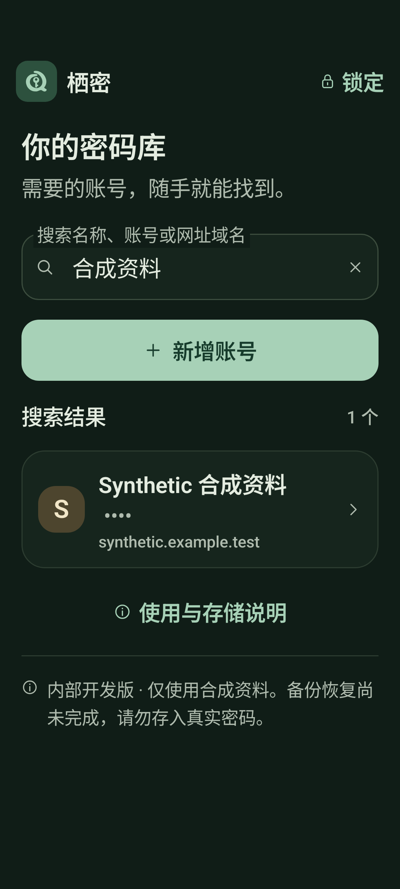
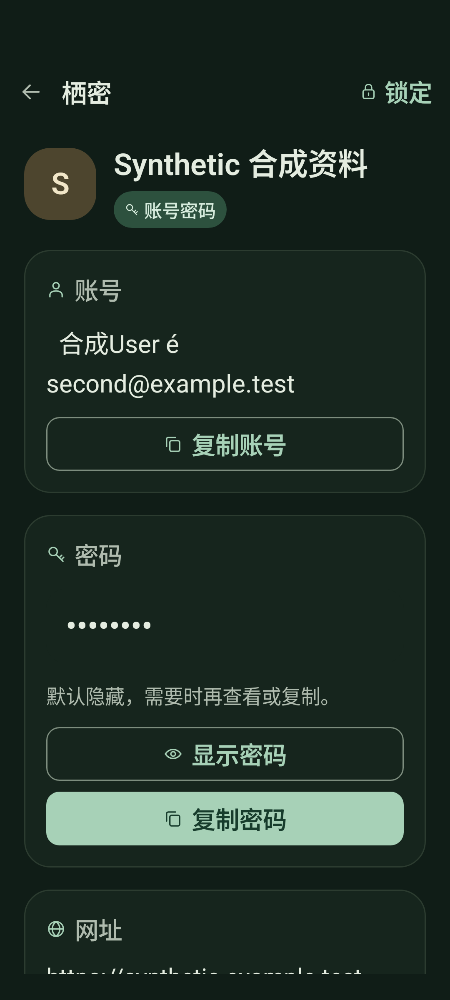

记下，不必复杂。
名称、账号、密码、网址和备注，一张清楚的表单。账号与密码按原值保存。
ANDROID本地密码管理 · 开源

App 不申请网络权限
不接入云账户或云同步
源码开放，边界透明
01 / 产品体验
从一条记录开始，把账号、网址与备注收在一起。需要时，找到它，再决定如何取用。
名称、账号、密码、网址和备注，一张清楚的表单。账号与密码按原值保存。
按名称搜索，查看完整记录。按需显示或复制密码，用完回到日常。
支持主动锁定与后台锁定，密码定时隐藏，敏感剪贴板按规则清理。
主密码保护本地加密库，不接入云账户。实现、验证记录与待完成事项公开可读。


真实 App 界面 · 合成资料示例
已实现
创建、加密保存、搜索、详情、显示与复制，以及后台锁定。
下一步 · 尚未实现
加密备份、可读性验证、失败保全，并实测系统备份与设备迁移排除。
后续路线 · 尚未实现
草稿、历史、密码生成、生物识别与可信目标自动填充，逐步完成首版验收。
03 / 一起打磨